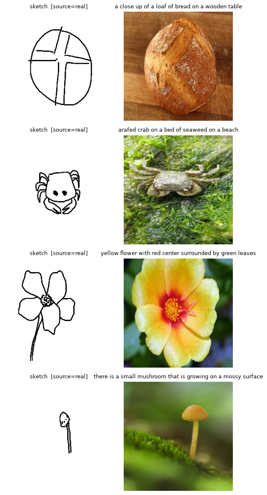
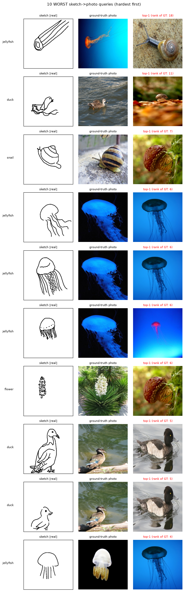
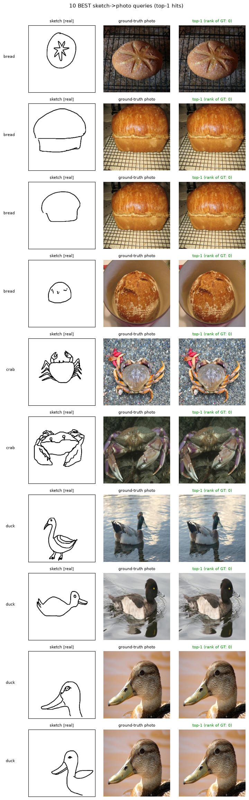

00 — Data & Cross-Domain Adaptation (InfoNCE baseline)
Starter notebook for the trimodal spherical-loss investigation (see paper.md):
Data — downloads Sketchy into data/ if possible (skips if cached). Sketchy’s official archive lives on Google Drive and often blocks programmatic download; in that case clear manual instructions are printed and we fall back to a clearly-labeled procedural mock dataset so the pipeline stays runnable end-to-end. Every sample carries a source flag (real/synthetic) for later per-source κ estimation.
Model — frozen CLIP (open_clip), LoRA adapters on the sketch path only (toggled off for photo forwards, so photo/text embeddings stay exactly CLIP’s and text remains the zero-shot semantic bridge).
Adaptation — minimal sketch→photo training loop with the baseline loss (weighted pairwise InfoNCE sum + adaptive-margin sketch–photo triplet).
Retrieval — sketch→photo and (sketch+text)→photo top-K retrieval with per-instance and per-category Recall@K on a held-out instance-level split.
CLI:python run.py 00 (add --smoke for a seconds-long toy run). Each run writes config.json, metrics.json, history.json and figures into runs/00_data_and_adaptation/<timestamp>/.
%matplotlib inline# ============================ CONFIG ============================# Edit here, or override headlessly: python run.py 00 --set steps=200 dataset=mock# All keys + defaults live in lib/config.py; TRIMODAL_* env vars override them.import sys, pathlib_p = pathlib.Path.cwd()ifnot (_p /"lib").exists() and (_p /"trimodal-loss"/"lib").exists(): _p = _p /"trimodal-loss"# allow launching jupyter from the repo rootsys.path.insert(0, str(_p))from lib.config import get_configfrom lib.run_utils import new_run_dirNOTEBOOK ="00_data_and_adaptation"CONFIG = get_config() # e.g. get_config(dataset="mock", backbone="toy")RUN_DIR = new_run_dir(NOTEBOOK) # every run gets its own results folderprint("run dir:", RUN_DIR)for k, v insorted(CONFIG.items()):print(f" {k:26s}{v}")
Sketchy: ~12,500 photos / 125 classes / ≥5 human sketches per photo — the best fit for per-instance κ estimation, but it has no native captions, so text is a weak class prompt ("a photo of a {class}"), flagged as pseudo-text (paper.md A1). The split is at instance level — a photo and all its sketches land on the same side (no leakage).
# Data (download-or-mock) + frozen backbone + LoRA sketch path — shared by all notebooksfrom lib.train import setup_experimentexp = setup_experiment(CONFIG)model, ds_train, ds_test = exp["model"], exp["ds_train"], exp["ds_test"]print("embed dim:", model.embed_dim,"| trainable params:", f"{sum(p.numel() for p in model.trainable_parameters()):,}")
[setup] device=cuda
[data] using Sketchy HF mirror (justpers/sketchy) at C:\Users\soura\Code\2026\trimodal-loss\data\sketchy_hf — real human sketches, GENERATED captions (pseudo-text)
C:\ProgramData\miniconda3\Lib\site-packages\tqdm\auto.py:21: TqdmWarning: IProgress not found. Please update jupyter and ipywidgets. See https://ipywidgets.readthedocs.io/en/stable/user_install.html
from .autonotebook import tqdm as notebook_tqdm
C:\Users\soura\AppData\Roaming\Python\Python313\site-packages\open_clip\factory.py:450: UserWarning: QuickGELU mismatch between final model config (quick_gelu=False) and pretrained tag 'openai' (quick_gelu=True).
warnings.warn(
# A few (sketch, photo, caption) samples with their source flags — sanity-check the dataimport matplotlib.pyplot as pltfrom PIL import Imagerows =4fig, axes = plt.subplots(rows, 2, figsize=(6, 3* rows))step =max(1, len(ds_train.triples) // rows)for r inrange(rows): t = ds_train.triples[r * step] axes[r, 0].imshow(Image.open(t.sketch_path)); axes[r, 0].set_title(f"sketch [source={t.source}]", fontsize=9) axes[r, 1].imshow(Image.open(t.photo_path)); axes[r, 1].set_title(t.caption, fontsize=9)for ax in axes[r]: ax.axis("off")fig.tight_layout(); fig.savefig(RUN_DIR /"sample_triples.png", dpi=110); plt.show()

2. Cross-domain adaptation with the baseline loss
Only the LoRA parameters train; photo & text encoders are frozen CLIP. The baseline is a weighted sum of three symmetric InfoNCE terms (s↔︎v, s↔︎t, v↔︎t) plus an adaptive-margin sketch–photo triplet where the margin shrinks for semantically close concepts (margin_ij = m0·(1 − cos(t_i, t_j)) — one simple instantiation, paper.md A6).
Every held-out sketch query is ranked by where its correct photo lands in the sketch→photo gallery ranking. Below we render the 10 worst queries (hardest first — the ones to interrogate) and the 10 best (top-1 hits), each as a triad [query sketch | ground-truth photo | top-1 retrieved photo]. A green top-1 title is a hit, red is a miss; the worst-performing classes are printed underneath so systematic failure modes (a class or a source the model can’t match) are visible.
from lib.train import show_good_bad_triadsranked_rows = show_good_bad_triads(exp, emb, RUN_DIR, k_show=10)# hardest 10, as a tableprint("\nHardest 10 queries (worst first):")print(f"{'class':16s}{'source':10s}{'rank':>5s}{'gt_sim':>9s}{'top1_sim':>9s}")_cn = {t.class_id: t.class_name for t in ds_test.triples}for r in ranked_rows[:10]:print(f"{_cn.get(r['class_id'],'?'):16s}{r['source']:10s}{r['rank']:5d}"f"{r['gt_sim']:9.3f}{r['top1_sim']:9.3f}")


Worst-performing classes (by miss count, rank>0): [('jellyfish', 17), ('duck', 12), ('snail', 10), ('pizza', 9), ('crab', 7), ('flower', 5), ('bread', 5), ('mushroom', 4)]
Mean rank 1.83 | top-1 hit rate 0.343
Hardest 10 queries (worst first):
class source rank gt_sim top1_sim
jellyfish real 18 0.095 0.272
duck real 11 0.131 0.255
snail real 7 0.166 0.278
jellyfish real 6 0.253 0.429
jellyfish real 6 0.270 0.425
jellyfish real 6 0.187 0.309
flower real 6 0.167 0.211
duck real 5 0.200 0.249
duck real 5 0.207 0.250
jellyfish real 4 0.250 0.357
Default config is a small smoke-scale subset (paper.md A5) — treat numbers as plumbing checks, not results. Scale num_classes / max_instances_per_class / steps up for real runs.
On the mock fallback everything is procedural; no scientific conclusion is valid (A2).
Next: 01_frechet_mean_loss / 02_spherical_triangle_loss / 03_vmf_loss train the three spherical framings on this exact setup and write comparable metrics.json files.